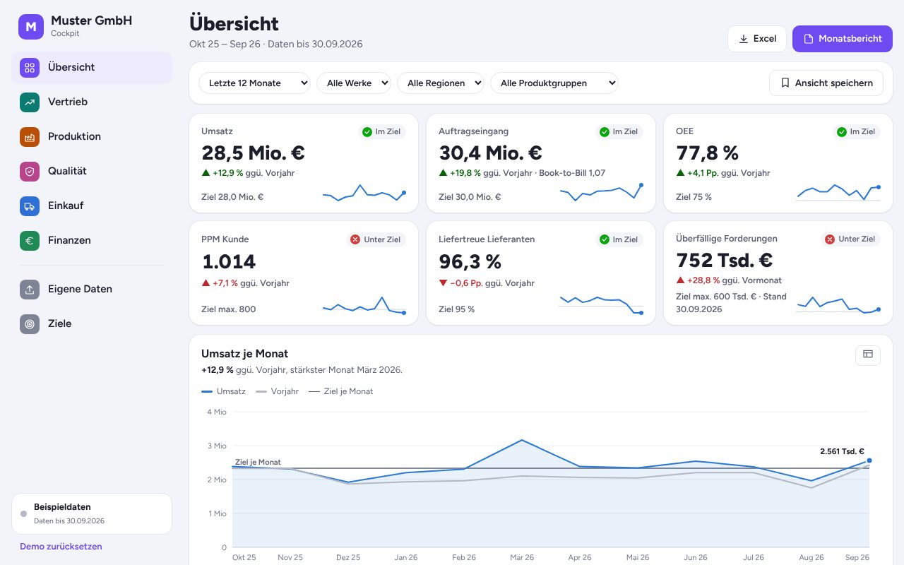

Dashboards
Dashboards, die Ihre Zahlen täglich aktuell zeigen
Wir führen Ihre Daten aus Excel, ERP, CRM und anderen Quellen in übersichtlichen Dashboards zusammen. Sie aktualisieren sich automatisch, damit niemand mehr Monatsberichte zusammenkopiert.
Umsatz der letzten 12 Monate (Tsd. €)
heute 06:00 automatisch aus ERP und CRM
Typische Aufgaben
Welche Dashboards wir bauen
Vertrieb
Umsatz, Angebote, Auftragseingang und Pipeline nach Kunde, Region oder Produkt.
Produktion und Qualität
Prüfergebnisse, Reklamationen, Ausschuss und Liefertreue im Zeitverlauf.
Finanzen und Controlling
Kosten, Margen und Liquidität im Vergleich zu Plan und Vorjahr.
Projekte
Status, Budget und Termine aller Projekte auf einer Seite.
Management-Übersicht
Die wichtigsten Kennzahlen des Unternehmens für Geschäftsführung und Beirat.
Automatische Berichte
Wöchentliche oder monatliche Zusammenfassungen per E-Mail, mit KI-Kommentar zu Auffälligkeiten.
Demo zum Ausprobieren
So sieht das in der Praxis aus

Geschäftsführungs-Cockpit
Vertrieb, Produktion, Qualität, Einkauf und Finanzen auf einen Blick. Mit Drill-down, Filtern, gespeicherten Ansichten und Excel-Upload für eigene Zahlen.
Das können Sie ausprobieren
- Eine Kennzahl anklicken und ins Detail gehen
- Nach Werk und Region filtern
- Eine eigene Excel-Datei hochladen

Produktions- und Qualitäts-Cockpit
OEE, Ausschuss in ppm, Liefertreue, Stillstände, First Pass Yield und Reklamationen mit 8D-Status. Nach Zeitraum, Linie und Maschine filterbar, mit Zielwerten und Ampeln.
Das können Sie ausprobieren
- Linie 2 antippen und OEE vergleichen
- Maschine in der Heatmap öffnen
- OEE-Ziel ändern und Ampeln beobachten
Ablauf
Vom Gespräch zur fertigen Lösung
Sie sehen früh ein Ergebnis und entscheiden Schritt für Schritt, wie es weitergeht.
- 130 Minuten · kostenlos
Erstgespräch
Wir klären, welche Aufgabe am meisten Zeit kostet und was eine Lösung bringen würde.
- 2ca. 1 Woche
Prototyp
Ein klickbarer Entwurf unter einer eigenen Vorschau-Adresse. Sie testen ihn mit echten Beispielen.
- 32 bis 6 Wochen
Umsetzung
Ausbau, Tests und Anbindung an Ihre Systeme wie Postfach, Kalender oder Buchhaltung.
- 4laufend
Betrieb
Hosting, Updates und Weiterentwicklung übernehmen wir auf Wunsch zum monatlichen Fixpreis.
Häufige Fragen
Antworten vorab
Aus welchen Systemen können Daten kommen?
Aus Excel und CSV, gängigen ERP- und CRM-Systemen, Datenbanken und vielen Cloud-Diensten mit Schnittstelle.
Wer kann das Dashboard sehen?
Nur berechtigte Personen. Der Zugang ist per Login geschützt, auf Wunsch mit unterschiedlichen Ansichten pro Rolle.
Wie oft werden die Daten aktualisiert?
Je nach Quelle stündlich, täglich oder nahezu in Echtzeit.
Brauchen wir dafür ein teures BI-Tool?
Nein. Wir bauen das Dashboard als Web-Anwendung, ohne laufende Lizenzkosten pro Nutzer.
Erzählen Sie uns, was Sie Zeit kostet
Im kostenlosen Erstgespräch finden wir heraus, wo sich Automatisierung oder eigene Software für Sie lohnt.
Erstgespräch anfragen